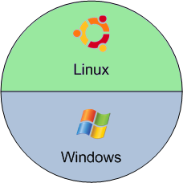

En informatique, le partitionnement d'un disque est l'opération qui consiste à le diviser en régions — ou partitions dans lesquelles les systèmes d'exploitation présents sur la machine peuvent y gérer leurs informations de manière séparée et privée. Chaque système d'exploitation est libre de diviser les partitions qu'il utilise de la manière qui lui convient; il le fait généralement en y créant un système de fichiers qui n'est autre qu'une manière de subdiviser l'espace disponible en y plaçant des repères et en maintenant à jour des tables d'allocations pour savoir à quoi sont utilisées les différents sous-espaces.
Les différentes partition d'un disque apparaissent aux systèmes d'exploitation qui les repèrent, chacun à sa manière, en leur donnant en général le nom de "disque" ou "volume". Les systèmes Windows, les présentent généralement à l'utilisateur en les repérant par des lettres (C:, D:, etc.), alors que les systèmes Mac OS les présentent sous forme d'icônes sur le bureau. Dans les systèmes UNIX ou Linux elles apparaissent à l'utilisateur de façons différentes selon l'outil utilisé et peuvent être parfois masquées car noyées dans l'arborescence unique des dossiers.
On nomme « partition d'amorçage » (parfois par abus de langage « partition primaire ») celle dans laquelle le micro-code, après avoir accompli l'initialisation du matériel, va chercher les premières instructions à exécuter pour continuer le processus de démarrage. En général, ce micro-code y trouve un chargeur d'amorçage qui lui permet, soit de démarrer l'unique système d'exploitation présent sur la machine, soit de présenter à l'utilisateur un choix entre différents systèmes chargeables.
Un disque dur peut être partitionné pour différentes architectures. On aura ainsi le partitionnement de type MBR (partitionnement Intel) pour la majorité des ordinateurs personnels (PC) ayant des disques de 2 To ou moins, ou GPT pour des architectures plus récentes (Macintosh, Linux et PC à venir) adaptées aux disques durs de plus de 2,2 To.
Exemple de partitionnement d'un disque dur mixte Linux/Windows, avec des liens entre les partitions
Les partitions multiples
Il y a trois sortes de partitions: les partitions principales, la partition étendue et les lecteurs logiques. Un disque peut contenir jusqu'à quatre partitions principales (dont une seule peut être active), ou trois partitions principales et une partition étendue. Dans la partition étendue l'utilisateur peut créer des lecteurs logiques (c'est-à-dire faire en sorte que l'on ait l'impression qu'il y a plusieurs disques durs de taille moindre). Partition principale Une partition principale doit être formatée logiquement, puis contenir un système de fichier correspondant au système d'exploitation installé sur celle-ci.
Si jamais vous avez plusieurs partitions principales sur votre disque, une seule sera active et visible à la fois, cela dépendra du système d'exploitation sur lequel vous avez démarré l'ordinateur. En choisissant le système d'exploitation que vous lancez au démarrage, vous déterminez la partition qui sera visible. La partition active est la partition sur laquelle un des système d'exploitation est démarré au lancement de l'ordinateur. Les partitions autres que celle sur laquelle vous démarrez seront alors cachées, ce qui empêchera d'accéder à leur données. Ainsi, les données d'une partition principale ne sont accessible qu'à partir du système d'exploitation installé sur cette partition.
Partition étendue La partition étendue a été mise au point pour outrepasser la limite des quatre partitions principales, en ayant la possibilité de créer autant de lecteurs logiques que vous désirez dans celle-ci. Au moins un lecteur logique est nécessaire dans une partition étendue, car vous ne pouvez pas y stocker de données directement.
Beaucoup de machines sont formatées en une grande partition utilisant l'intégralité de l'espace disponible du lecteur. Ce n'est pourtant pas la solution la plus avantageuse en terme de performances et de capacité. La solution est de créer plusieurs partitions, ce qui va vous permettre :
- D'installer plusieurs systèmes d'exploitation sur votre disque dur - D'économiser de l'espace disque- D'augmenter la sécurité de vos fichiers - D'organiser vos données plus facilement
Voila à quoi pourrait ressembler un système comportant plusieurs systèmes d'exploitations

Hard Drive Mechanic, site sur le fonctionnement des disques durs - Tous droits réservés. Copyright Mentions LégalesContactez Site Créé par Sébastien BUNEL